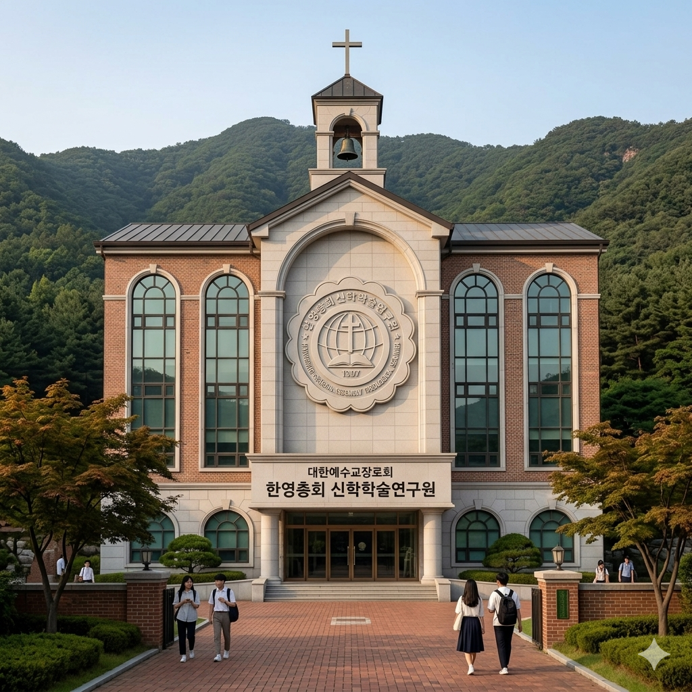

총회신학학술연구원을 방문해 주신 여러분을 진심으로 환영합니다.
대한예수교장로회 한영총회 신학학술연구원은 성경의 절대 권위와 개혁주의 신앙 전통 위에 세워진 신학 교육 및 목회자 양성 기관입니다. 본 연구원은 급변하는 시대 속에서도 변하지 않는 복음의 진리를 붙들고, 교회와 목회 현장에서 실제로 쓰임 받을 수 있는 신실한 사역자를 세우는 것을 목적으로 합니다. 신학교육은 단순히 지식을 전달하는 과정이 아니라, 하나님 앞에서 부름 받은 사람의 소명과 인격, 신앙고백과 사역 역량을 함께 형성하는 거룩한 훈련입니다. 이에 본 연구원은 성경, 조직신학, 교회사, 목회학, 설교학, 선교학, 기독교상담학, 영성훈련 등 다양한 교과를 통하여 학생들이 말씀을 바르게 이해하고 교회를 책임 있게 섬기도록 교육합니다.
한영총회 신학학술연구원은 온라인 LMS 교육 체계를 기반으로 시간과 지역의 제약을 넘어 신학을 배우고자 하는 목회자, 전도사, 평신도 지도자, 선교 헌신자, 상담 사역자들에게 열린 배움의 장을 제공합니다. 또한 필리핀 GTCC대학과의 학위연계 과정을 통하여 신학 연구와 목회 현장을 연결하고, 총회 자체 목회과정을 통하여 설교, 심방, 상담, 전도, 교회행정, 장로교 정치 등 실제 사역에 필요한 훈련을 제공합니다. 본 연구원은 학문성과 영성, 이론과 실천, 교단 신학과 세계 선교의 비전을 균형 있게 추구하며, 학생 한 사람 한 사람이 하나님 나라와 교회를 섬기는 책임 있는 사역자로 성장하도록 지도합니다.
오늘의 교회는 성경을 바르게 해석하는 신학적 분별력, 상처 입은 영혼을 돌보는 목회적 감수성, 다음 세대를 세우는 교육적 역량, 복음을 삶으로 증언하는 영적 성숙을 요청받고 있습니다. 한영총회 신학학술연구원은 이러한 시대적 요청에 응답하여 말씀 중심의 신학 교육, 현장 중심의 목회 훈련, 인격 중심의 영성 형성을 함께 이루어 가고자 합니다. 본 연구원은 앞으로도 총회와 지교회, 국내와 해외 사역 현장을 연결하며, 바른 신학과 따뜻한 목회, 건강한 교회 세움을 위해 헌신하는 신학 교육 공동체로 나아갈 것입니다.
믿고 함께 가시기를 기도합니다 .